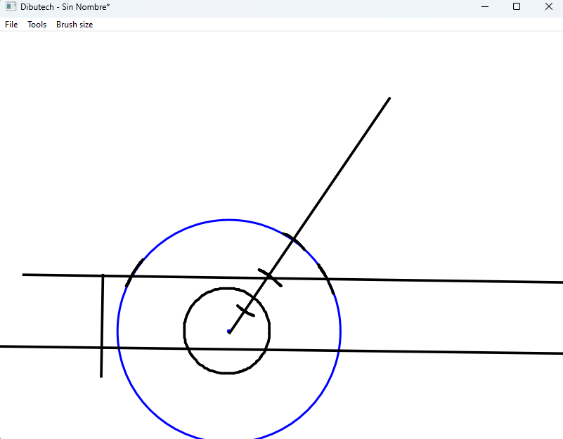

¿Quién soy?
¡Holii! Soy Nathan, un estudiante de bachillerato que se dedica a programar en sus ratos libres.
Llevo ya unos años metido en el mundo de la informática y, sobre todo, de la programación. He experimentado con muchos tipos de lenguajes, de alto y bajo nivel: he probado Java, Python, C++, Lenguaje ensamblador x86...
Me gusta superar mis conocimientos y busco retos que cumplir u objetivos que alcanzar.

Mis proyectos
Dibutech
Una aplicación para Windows, orientada a la enseñanza de dibujo técnico de forma fácil y sencilla

Platime
Un juego desarrollado con Unity 5. Un juego de plataformas con historia profunda y gameplay sencillo.

Esta misma página
Esta página ha sido desarrollada sin ningún framework. Todo lo visto aquí está formado por puro y duro HTML5 y CSS a mano.
EN DESARROLLO: App alertas AEMET
Una aplicación para Windows con el propósito de avisar a los usuarios en tiempo real de los avisos emitidos por la Agencia Estatal de Meteorología.